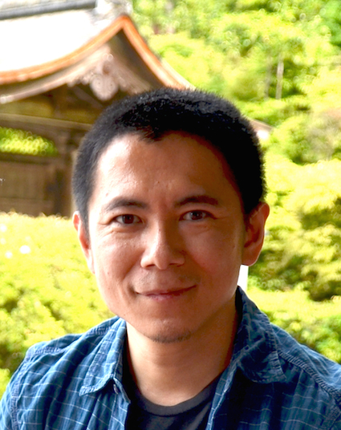

Kazunori Hayashi
Affiliation: Graduate School of Engineering, Osaka City University
Address: 3-3-138 Sugimoto, Sumiyoshi-ku, Osaka, 558-8585, Japan
Tel/Fax: +81 6 6605 2684
E-mail: kazunori [at] eng.osaka-cu.ac.jp
Degrees
- 1993-1997: Bachelor of Engineering, Osaka University
- 1997-1999: Master of Engineering, Osaka University
- 1999-2002: Doctor of Engineering, Osaka University
Career
- 2002-2007: Instructor, Graduate School of Informatics, Kyoto University
- 2007-2009: Assistant Professor, Graduate School of Informatics, Kyoto University
- 2009-2017: Associate Professor, Graduate School of Informatics, Kyoto University
- 2017-Pres.: Professor, Graduate School of Engineering, Osaka City University
Awards
- IEICE Communications Society: Distinguished Contributions Award (2014)
- IEICE Transactions on Communications: Best Tutorial Paper Award (2014)
- The Telecommunications Advancement Foundation Award (2012)
- WPMC 2011 BEST PAPER AWARD (2011)
- IEICE Transactions on Communications: Best Paper Award (2011)
- IEEE Globecom 2009 BEST PAPER AWARD (2009)
- The 7th ICF Research Award (for research on single carrier block transmission) (2009)
- IEICE Communications Society: Distinguished Contributions Award (2008)
- IEICE Communications Society: Distinguished Contributions Award (2005)